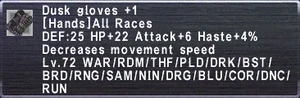

Level 75 reference · Zenith rules


StatisticsDusk Gloves +1
|
Other UsesGuild Points Value: None
|
Synthesis RecipesLeathercraft (99)
|
|
Desynthesis RecipeUnknown |
How to Obtain
Auction House Category: Armor > Hands
Crafted only!
Adapted from Eden Wiki: Dusk Gloves Plus 1 · Contributors and history · CC BY-SA 4.0. Revision 44394. Layout, links and optional background text adapted for Zenith.